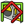
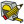

Visualizza
Contiene le funzioni relative alla visualizzazione del modello, come ad esempio quali pannelli mostrare, zoom, ecc. .
{kind=link}
- Viste standard
-
 Visualizza tutto
Visualizza tutto -
 Visualizza la selezione
Visualizza la selezione -
 Assonometrica 0
Assonometrica 0 -
 Di fronte 1
Di fronte 1 - Dall'alto 2
-
 Destra 3
Destra 3 - Dietro 4
-
 Dal basso 5
Dal basso 5 -
 Sinistra 6
Sinistra 6 -
 Ruota verso sinistra
Ruota verso sinistra - Ruota verso destra
-
{kind=link}
{kind=link}
{kind=link}
- Congela la visualizzazione
- Salva le viste...
- Carica le viste...
- Congela la vista
- Pulisci le viste
{kind=link}
- Stereo
-
 rosso/verde
rosso/verde - quad buffer
- a righe interlacciate
- a colonne interlacciate
-
 Stereo Off
Stereo Off - Pubblica la posizione della camera
-
{kind=link}
- Zoom vedere anche Tipi di mouse
-
 In
In -
 Out
Out -
 Finestra (adatta al riquadro di selezione)
Finestra (adatta al riquadro di selezione)
-
- Finestra del documento
- Attiva/disattiva origine degli assi
- Mappatura texture vedere Macro per mappare immagine e anche Vista texture
- Visibilità
- Nascondi/Mostra (commuta visibilità) (stessa azione di "spazio")
- Mostra la selezione
- Nascondi la selezione
- Attiva/disattiva tutti gli oggetti (commuta visibilità) (stessa azione di "spazio")
- Mostra tutti gli oggetti
- Nascondi tutti gli oggetti
-
 Attiva/disattiva selezionabilità
Attiva/disattiva selezionabilità -  Attiva/disattiva misura
-  Cancella misura
{kind=link}
{kind=link}
- Nascondi/Mostra (commuta visibilità) (stessa azione di "spazio")
- Attiva/disattiva modalità di spostamento o modifica
- Aspetto...
- Modalità di visualizzazione
- Materiale
- Visualizzazione
- Dimensione punto
- Spessore linea
- Trasparenza
- Trasparenza della linea
- Colore casuale
- Ambiente
- Nessuno
-
 Architettura
Architettura -
 Assemblaggio
Assemblaggio -
 Completo
Completo - Draft
-
 Disegno
Disegno -
 Fem
Fem -
 Immagine
Immagine - Info
-
 Inspection
Inspection - Mesh
- OpenSCAD
- Parte
-
 PartDesign
PartDesign -
 Grafico
Grafico - Punti
-
 Raytracing
Raytracing - Reverse Engineering
- Robot
- Ship
-
 Schizzo
Schizzo -
 Foglio di calcolo
Foglio di calcolo - Start Center
-
 Test framework
Test framework -
 Web
Web
{kind=link}
{kind=link}
{kind=link}
{kind=link}
{kind=link}
{kind=link}
- Barre degli strumenti
- File
- Macro
- Vista
- Part Design
- Solidi
- Strumenti Parte
- Operazione booleana
- ...
- Bolts
- Info
- Screw
- Pannelli
- Report
- Struttura
- Proprietà
- Selezione
- Vista combinata
- Console Python
- Barra di stato